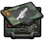
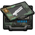
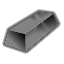
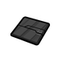

不可直接塑形的金属链物料:矿石·精料·粉料·纯金属块·焊料·冶铁中间物(生铁/块炼铁/渗碳钢/炉渣),只能当配方原料或助熔

原料级·太空·激光枪部件 Laser_Component
不可塑形仅配方原料 价值1000 质量1.50 护甲—/—/— 利钝—/—
Core_SK · def自带 · Things/Item/WeaponParts/LaserComponent
原料级·太空·等离子枪部件 Plasma_Component
不可塑形仅配方原料 价值1000 质量1.60 护甲—/—/— 利钝—/—
Core_SK · def自带 · Things/Item/WeaponParts/PlasmaComponent

原料级·太空·能量武器部件 Charged_Component
不可塑形仅配方原料 价值687 质量1.45 护甲—/—/— 利钝—/—
Core_SK · def自带 · Things/Item/WeaponParts/ChargedComponent
stuffProps 含 Plastic 的通用/工程塑料。HSK 给它们同时挂了 StrongMetallic/RuggedMetallic 等金属类,所以塑料也能替代金属出装备 —— 但能顶替到哪一档差别很大(聚丙烯=塑料级,贝塔聚合物=超钢级),看每行的能力档徽标
强化工程级·太空·石墨烯气凝胶复合物 Aerographene兼金属类
强化工程级家具建筑383防具108穿戴件21近战工具54远程武器7其它6共579件 价值50 质量0.15 护甲1.44/2.10/0.22 利钝1/0.85
Vile's Materials Science · def自带 · Things/Item/Material/Aerographene

强化工程级·太空·纳米复合物 CarbonAlloy兼金属类
强化工程级家具建筑383防具108穿戴件21近战工具54远程武器7其它6共579件 价值50 质量0.25 护甲1.55/1.50/0.15 利钝1.50/1.20
Core_SK · def自带 · Things/Item/Material/Nanocomposite
stuffProps 含 HF 的高性能纤维(凯夫拉/尼龙/超高分子量等):软质防具与织物件主力(约 106 件防具 + 13 件家具)
窄用级·太空·Micropel抗菌纤维 Micropel
窄用途家具建筑13防具30穿戴件76共119件 价值25 质量0.03 护甲0.90/0.90/0.12 利钝—/—
Vile's Materials Science · def自带 · Things/Item/Textile/HiTech
窄用级·太空·大力马 Hyperweave
窄用途家具建筑13防具30穿戴件76共119件 价值35 质量0.03 护甲2.20/1.65/0.16 利钝—/—
游戏本体 Core · def自带 · Things/Item/Textile/HexFabric
窄用级·太空·甲壳板 ChitinPlating
窄用途家具建筑13防具30穿戴件76共119件 价值35 质量0.03 护甲1.90/1.70/0.20 利钝—/—
Core_SK · def自带 · Things/Item/Textile/HexFabric
窄用级·太空·诺梅克斯纤维 Nomex
窄用途家具建筑13防具30穿戴件76共119件 价值25 质量0.03 护甲1.40/1.40/0.78 利钝—/—
Vile's Materials Science · def自带 · Things/Item/Textile/Nomex
工程陶瓷/军规陶瓷(stuffProps 含 Ceramic)

美狐军规陶瓷 Miho_MilitaryGradeBalisticCeramics兼金属类
强化工程级家具建筑487防具34穿戴件19近战工具44其它2共586件 价值7.5 质量0.50 护甲1.15/0.40/1.50 利钝1/0.60
HSK工业科研大修 · 按消耗它的配方研究档 · Things/Items/MihoMGBCreamic